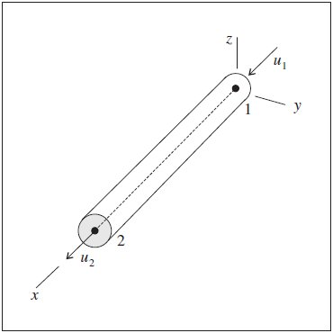
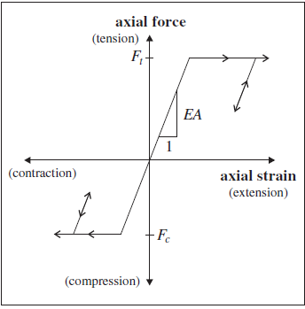
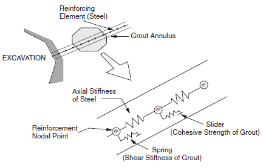
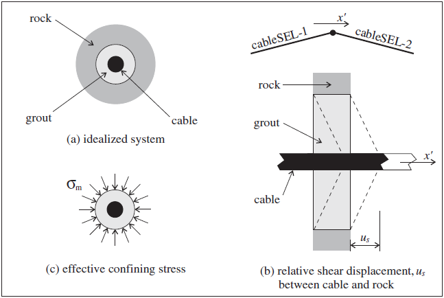
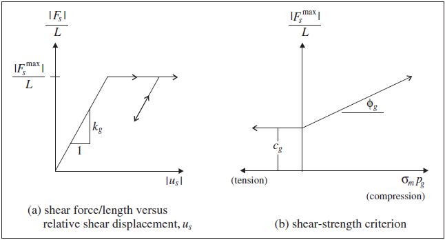

锚索结构单元
岩石中的锚索与锚杆加筋有两种略有不同的功能。在承受低量级原位应力场的硬岩中，破坏往往局部化，局限于紧邻洞室的岩楔。此处锚杆加筋的作用是在节理面上提供对岩楔位移的局部抗力。某些情形下，除加筋的轴向刚度外，抗弯能力对抗剪切变形也可能重要。这类锚杆作用可用具有抗弯刚度的桩结构单元模拟（见 桩结构单元（Pile Structural Elements））。若弯曲效应不重要，锚索结构单元即可胜任，因为它们沿其长度提供抗剪阻力（借助浆体性质）。可以模拟这样一类加筋体系（例如锚索锚杆）：其黏结剂（浆体）可能在加筋体某段长度上发生剪切破坏。计入浆体环这种剪切行为的数值表述见 浆体环的剪切行为（Shear Behavior of Grout Annulus）。
力学行为
每个锚索结构单元由其几何、材料与浆体性质定义。锚索单元假定为具有均匀截面与材料性质、位于两节点之间的直线段。任意弯曲的结构锚索可建模为由一组锚索单元组成的曲线结构。锚索单元表现为弹性理想塑性材料，可拉压屈服，但不能承受弯矩。锚索可与浆体黏结，使力沿其长度随锚索与网格之间的相对运动而发展。浆体表现为弹性理想塑性材料，其峰值强度与围压相关，破坏后强度不降低。锚索单元适用于模拟抗拉能力重要、且与岩土体沿轴向发生摩擦作用的结构支护构件。
每个锚索单元都有各自的局部坐标系，如 图 1（Figure 1） 所示。该系用于定义锚索的平均轴向方向。锚索单元坐标系由其两个节点位置定义（图 1（Figure 1） 中标为 1 与 2）。单元坐标系的定义使
- 形心轴与 \(x\) 轴重合，
- \(x\) 轴由节点 1 指向节点 2，且
- \(y\) 轴与全局 \(y\) 或 \(x\) 方向（取与局部 \(x\) 轴不平行的那个）在横截面平面上的投影对齐。

图 1：锚索单元坐标系与锚索有限单元的 2 个活动自由度
锚索单元坐标系不可修改。可用 Cable 绘图项查看，并用 列出锚索单元局部坐标系命令（structure cable list system-local） 命令打印。节点连接关系可用 列出锚索单元信息命令（structure cable list information） 命令打印。
锚索单元所用全部节点的节点局部系方位在一组循环开始时（或在执行 执行计算时步（model cycle） 0 命令时）自动设定，使 \(x\) 轴与使用该节点的所有锚索单元的平均轴向方向对齐，而 \(yz\) 轴在锚索横截面平面内任意取向。
锚索支持大应变滑动（把 slide 性质设为 on），此时在大应变模式下运行时，插值位置（锚索节点用于与网格单元之间传递力与速度——见 结构单元连接（Structural-Element Links））将随网格迁移。这可计算锚索的大应变破坏后行为，此时锚索节点与网格单元之间发生显著滑动。若某锚索节点移出所有网格单元，则即便该节点后来又移回网格单元内，也不会重建与网格单元的连接；不过在锚索节点于网格单元之间滑动期间，该连接保持完好。
锚索有限单元的两个活动自由度示于 图 1（Figure 1）。图中每个轴向位移都对应一个轴力。锚索有限单元的刚度矩阵在每个节点只含该单一自由度，以表示锚索结构中的轴向作用。
以下四个小节分别描述：(1) 锚索本身的轴向行为；(2) 浆体环的剪切行为；(3) 浆体界面的法向行为；(4) 对锚索施加预拉力的方式。行为描述所依据的锚索性质见 性质（Properties）（相关记号汇总参见该列表）。
轴向行为
常规加筋体系的轴向行为可假定完全由加筋构件本身控制。加筋构件通常由钢材制成，可为钢筋或钢绞线。由于加筋构件细长，其抗弯能力很小（对钢绞线尤其如此），因此按能承受单轴拉力的三维一维结构构件处理。（也允许受压；不过当模拟以受压为主的支护时，建议采用桩结构单元。）
一维本构模型足以描述加筋构件的轴向行为。轴向刚度 \(K\) 由加筋体横截面积 \(A\)、杨氏模量 \(E\) 与单元长度 \(L\) 按以下关系确定
可为锚索单元赋予抗拉与抗压屈服强度 \(F_t\) 与 \(F_c\)，使大于该限值的锚索力无法发展（见 图 2（Figure 2））。若未指定 \(F_t\) 或 \(F_c\)，则锚索在该方向加载时强度无限。

图 2：单元的锚索材料行为
锚索在累积足够的塑性拉应变后可能断裂。若设置了破坏限值且拉应变超过该值，则认为该单元已破坏，不再承受拉力或压力。

图 3：全黏结加筋的力学表示
浆体环的剪切行为
锚索-岩体界面的剪切行为兼具黏聚与摩擦性质。该体系经理想化（如 图 4（Figure 4） (a) 所示），在数值上表示为位于锚索轴线上各节点的弹簧-滑块系统（如 图 3（Figure 3） 所示）。在锚索/浆体界面与浆体/岩体界面之间发生相对剪切位移时（如 图 4（Figure 4） (b) 所示），浆体环的剪切行为在数值上由以下参数描述：(1) 浆体剪切刚度 \(k_g\)；(2) 浆体黏聚强度 \(c_g\)；(3) 浆体摩擦角 \(\phi_g\)；(4) 浆体外露周长 \(p_g\)；(5) 有效围压 \(\sigma_m\)（图 4（Figure 4） (c)）。注浆锚索体系的力学行为用这些参数表示于 图 5（Figure 5）。注意各锚索单元对应的浆体性质在锚索节点处取平均。


图 4：注浆锚索体系的理想化


图 5：锚索单元的浆体材料行为
有效围压 \(\sigma_m\) 作用于垂直于锚索轴线的平面内，并沿锚索轴线在每个节点处依据节点所连网格单元中的应力计算。记锚索轴向为 \(x'\)，并记作用于 \(y'z'\) 平面内的主应力为 \(\sigma_1\) 与 \(\sigma_2\)，使 \(\sigma_1 > \sigma_2\)（拉为正）。则 \(\sigma_m\) 取为
其中： \(p\) = 孔隙压力
计算锚索-岩体界面相对位移时，采用插值方案依据节点所连网格单元内的位移场，计算每个锚索节点处岩体沿锚索轴向的位移。插值方案的权重因子由到该网格单元各网格点的距离确定。同一插值方案也用于把锚索-岩体界面处发展的力反向施加到该网格单元的网格点上。
浆体界面的法向行为
如上所述，在每个锚索节点处对网格速度作出插值估计。垂直于锚索轴线方向的速度 normal 被直接传递给节点（即锚索节点在法向“从属”于网格运动）。若共享该节点的两个锚索单元共线，则节点对网格不施加法向力；但若两个单元不共线，则其轴力的一部分将在法向起作用。该净力同时作用于网格与锚索节点（方向相反）。因此，初始为直线的锚索若允许有限挠度，用大应变求解模式即可承受法向荷载。
Pretensioning
可用 施加锚索单元拉力命令（structure cable apply tension） 命令对锚索施加预拉力。正值对范围内所有锚索单元施加轴向拉力。该拉力将一直保持，直到用 施加锚索单元主动拉力命令（structure cable apply tension active） 关闭（off） 命令释放。注意移除拉力施加条件并不会改变锚索单元当前的轴力，只是去掉了把该力保持在特定水平的条件。
实际中，预张拉锚索可全长注浆，也可部分长度不注浆。无论哪种情形，都提供一定锚固长度（通常在远端）以在预张拉期间支承锚索。为模拟该预张拉，只需为构成锚固长度的锚索单元指定锚固性质，为构成自由长度的单元指定其他性质（例如 \(c_g = 0\)）。
需注意，指定了预拉力的锚索在初始时刻很可能并不与所连接的其他结构单元或模型网格平衡。换言之，通常需要锚索节点与相连实体产生一定位移才能达到平衡。因此，正确施加锚索预拉力一般通过三条命令完成：
struct cable apply tension value 1000 range group 'pretension'
model solve
struct cable apply tension active off
第一条命令对一组特定锚索单元施加拉力（此前为此外已用 预拉力（pretension） 组名标记）。第二条命令求解至平衡。第三条命令移除所施加的拉力值，此后锚索将自然响应。
实际应用示例见 三锚头开挖墙的安装（Installation of a Triple-Anchored Excavation Wall） 或 带预张拉锚杆的不透水混凝土沉箱墙（Impermeable Concrete Caisson Wall with Pretensioned Tiebacks）。
响应量
锚索的响应包括锚索单元本身的力、应力与屈服状态，以及代表浆体的剪切耦合弹簧的应力、位移与滑动状态。附加耦合弹簧信息包括当前加载方向与围压。锚索的响应可通过 FISH 访问，并用
- 用 列出锚索单元（
structure cable list） 命令可用的某个关键字打印， - 用 锚索单元历史设置（
structure cable history） 命令监测，以及 - 用 Cable 绘图项绘制。
浆体应力的符号以锚索平均轴向方向为参照，即正浆体应力沿锚索平均轴向正方向作用于锚索。该符号约定假定构成锚索的单元方向一致，使其局部坐标系对锚索方位构成连续描述。若锚索是用 structure cable create 命令创建的，情况正是如此。如此创建的每个单元的节点排序使锚索整体方向从第一个点指向第二个点。节点连接关系可用 列出锚索单元信息命令（structure cable list information） 命令打印。
属性
各锚索单元具有 12 个性质：
- density，质量密度 \(ρ\)，可选，启用动力模式或重力时需要［M/L3］
- young，杨氏模量 \(E\)［F/L2］
- grout-cohesion，单位长度上的注浆黏结强度（力），\(c_g\) [F/L]
- grout-friction，浆体摩擦角，\(ϕ_g\) [度]
- grout-stiffness，单位长度浆体刚度 \(k_g\)［F/L2］
- grout_perimeter，浆体外露周长，\(p_g\) [L]
- slide，大应变滑动标志（默认：off）
- slide-tolerance，大应变滑动容差
- thermal-expansion，热膨胀系数，\(α_t\) [1/T]（可选，用于热分析）
- cross-section-area，横截面积，\(A\) [L2]
- yield-compression，抗压屈服强度（力），\(F_c\) [F]
- yield-tension，抗拉屈服强度（力），\(F_t\) [F]
锚索的面积、模量与屈服强度通常可从手册、厂家规格等资料直接获得。浆体性质则较难估算。浆体环假定为弹性理想塑性固体。由于筋体表面与钻孔表面之间发生相对剪切位移 \(u^t\)，单位锚索长度发挥的剪力 \(F^t\) 与浆体刚度 \(k_g\) 的关系为：
通常 \(k_g\) 可由室内拉拔试验直接量测。或者，刚度可由弹性剪应力的数值估算 \(\tau_G\) 计算，后者由描述浆体/岩石界面剪应力的方程得到（St. John 与 Van Dillen 1983）：
| 其中： | \(\Delta u\) | = | 单元与周围材料之间的相对位移； |
| \(G\) | = | grout shear modulus; | |
| \(D\) | = | reinforcing diameter; and | |
| \(t\) | = | 环带厚度。 |
因此，浆体剪切刚度 \(k_g\) 直接由下式给出
许多情形下发现以下表达式可为程序中所用 \(k_g\) 提供合理估计：
十分之一因子用于计入宿主网格单元网格点与钻孔表面之间发生的相对剪切位移。当前表述未计入该相对剪切位移。
浆体中单位锚索长度最大剪力由 图 2（Figure 2） 所示关系确定。黏结黏聚强度 \(c_g\) 与摩擦角 \(\phi_g\) 的值可由不同围压下拉拔试验的结果估算；若无此类结果，则单位长度最大力可由峰值抗剪强度近似（St. John 与 Van Dillen 1983）：
其中 \(\tau_I\) 约为岩石与浆体中较弱者单轴抗压强度的一半，\(Q_B\) 为浆体与岩石之间黏结质量（\(Q_B\) = 1 表示完全黏结）。
忽略摩擦围压效应后，\(c_g\) 可由下式得到
加筋体系的破坏并不总在浆体/岩石界面发生。破坏也可能在加筋体/浆体界面发生，锚索加筋常见如此。此时应在该界面处评估剪应力。这意味着把 (2) 中的表达式（\(D + 2t\)）替换为（\(D\)）。
下例演示锚索单元性质的计算。一根直径 25.4 mm（1 英寸）的锁口钢丝绳锚索按 2.5 m 间距安装。该加筋体系由若干性质表征：
| 锚索直径（\(D\)） | 25.4 mm |
| 孔径（\(D+2t\)） | 38 mm |
| 锚索模量（\(E\)） | 98.6 GPa |
| 锚索极限抗拉能力 | 0.548 MN |
| 浆体抗压强度 | 20 MPa |
| 浆体剪切模量（\(G_g\)） | 9 GPa |
| friction (ignored) | 0 |
评估浆体最大剪力时采用两种独立方法。第一种方法假定黏结抗剪强度为浆体单轴抗压强度的一半。若浆体材料抗压强度为 20 MPa 且浆体弱于周围岩体，则浆体抗剪强度为 10 MPa。
第二种方法用所报告的拉拔数据估算浆体抗剪强度。该报告给出直径 15.9 mm（5/8 英寸）钢索在深度各异的孔中以 0.15 m（5.9 英寸）黏结长度注浆的结果。试验表明承载力约为 70 kN。若假定锚索表面积为 0.0075 m2（0.15 m × 0.05 m），则算得浆体最大抗剪强度为
该值与上面估算的 10 MPa 很接近，两者均可采用。假定破坏发生在锚索/浆体界面上，则单位长度最大黏结力为（用 (2) 且把 \(D+2t\) 替换为 \(D\)）
浆体刚度 \(k_g\) 由 (1) 估算。按上表所示假定值，算得浆体刚度为 1.5 × 1010 \({N/m \over {m}}\)。
由拉拔试验估算浆体性质的另一算例见 全黏结岩石加筋拉拔试验模拟（Simulation of Pull-Tests for Fully Bonded Rock Reinforcement）
Commands & FISH
| 这些内容对您有帮助吗？… 版权与免责声明 |
FLAC3D © 2019, Itasca | 原文更新于 2020 年 10 月 8 日 |